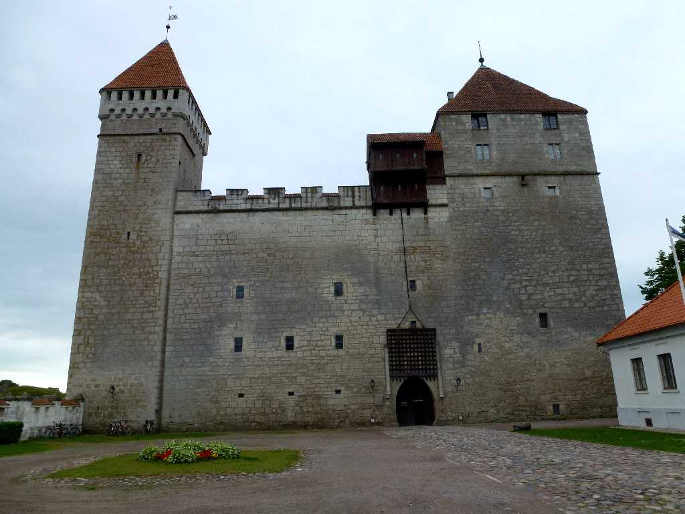
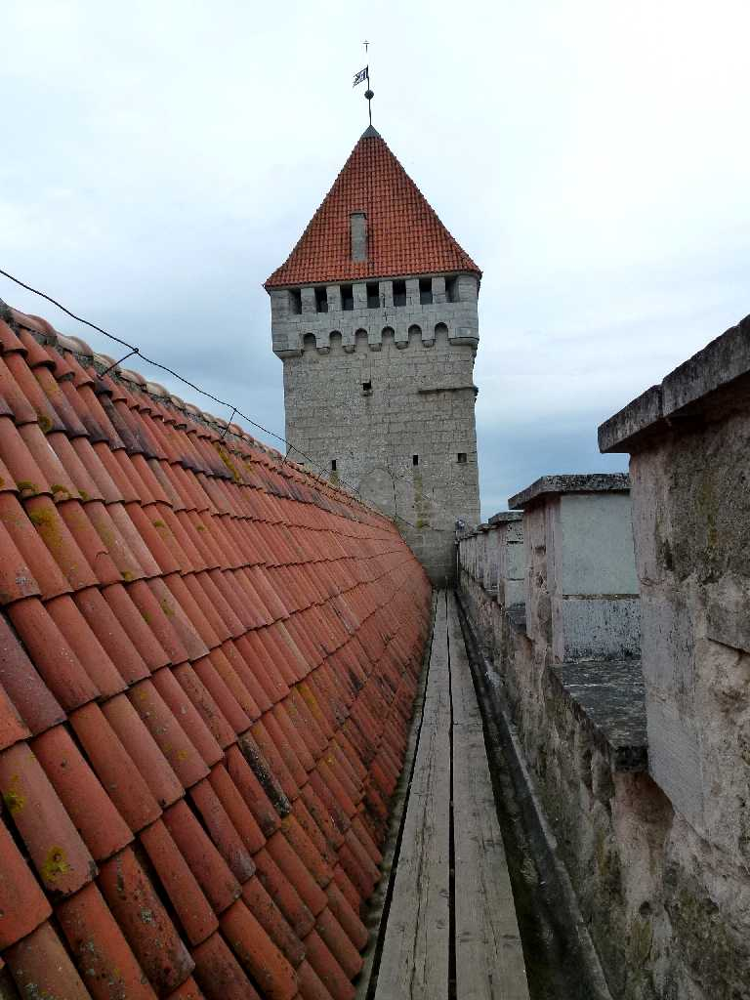
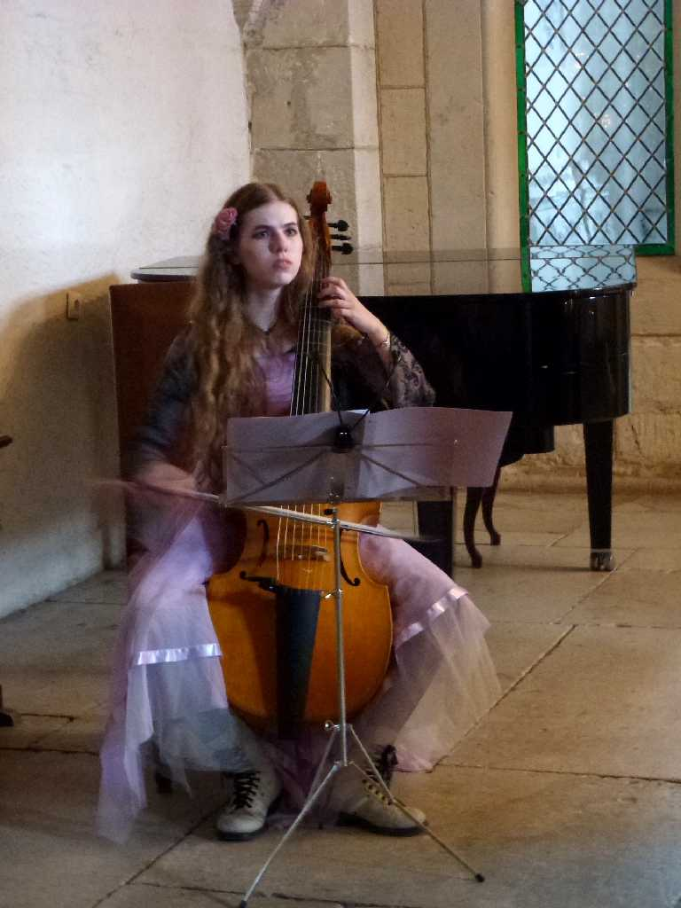
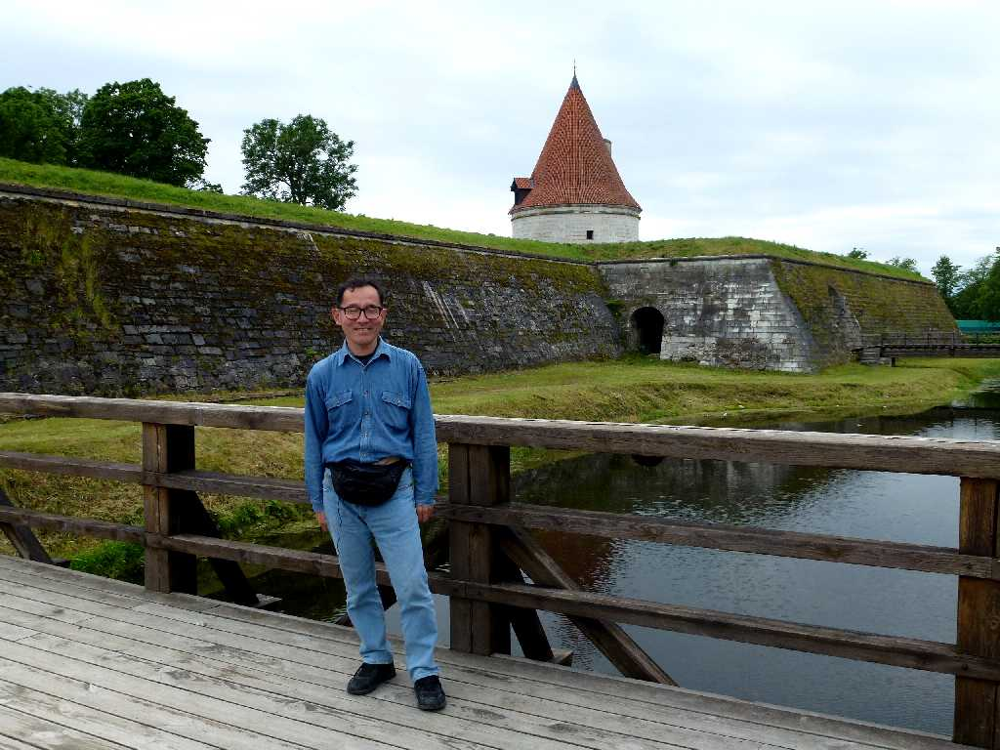
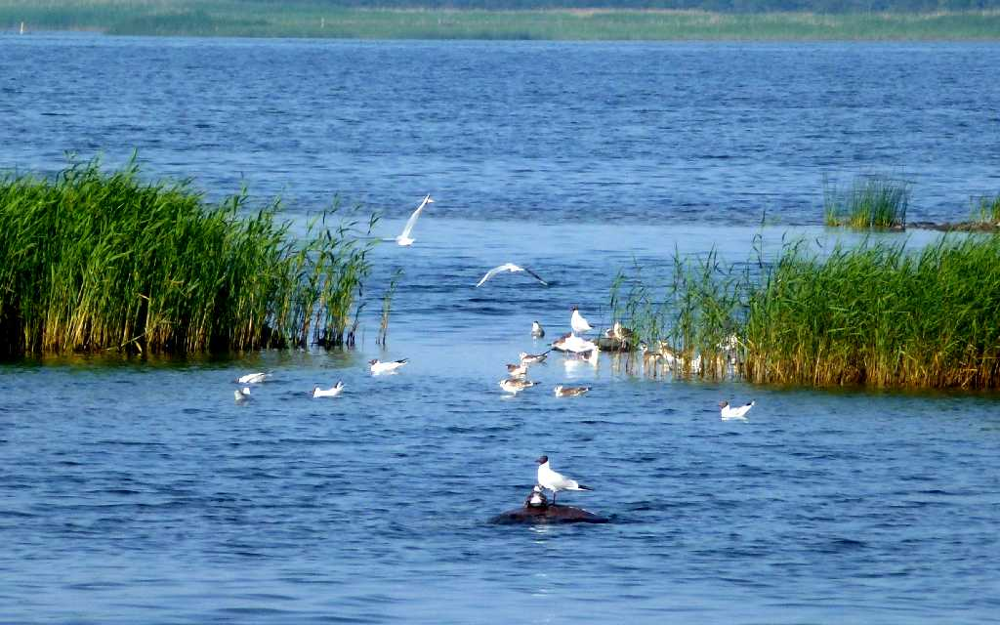
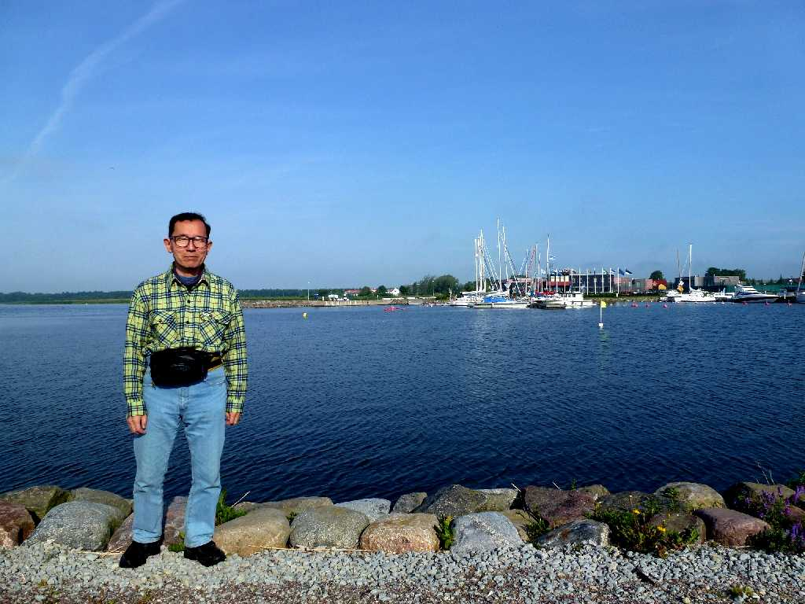

Kuressaare Castle Saaremaa Island
サーレマー島のクレサーレ城 は１３世紀に創られた要塞を１４世紀にドイツ騎士団が城砦に造り替え１６世紀にはデンマーク１７世紀にはスウェーデン１８世紀にはロシアが統治し改修したものの大きく破壊されず残った
 
Tower Kuressaare Castle Cello

June 30 2012 Approach Kuressaare Castle

Kuressaare Port

July 1 2012 Kuressaare Port